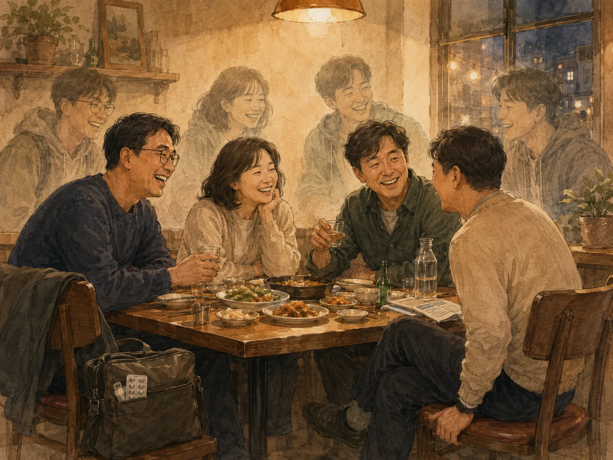

아직 그때의 얼굴

뒤꿈치가 찌릿했다.
오랜만에 통풍이 다시 왔다.
잊을 만하면 아프고, 또 잊을 만하면 아프다. 주변에서 이야기하는 것처럼 죽을 만큼 아픈 수준은 아니니 다행이라고 해야 할까.
예전에는 몸이 아프면 그냥 잠을 잘못 잤나 싶었다. 하루 이틀 지나면 괜찮아질 거라고 생각했고, 실제로 대부분 그랬다.
그런데 이제는 몸이 보내는 신호에 이름이 붙기 시작했다.
통풍.
혈압.
콜레스테롤.
간 수치.
건강검진 결과표도 나와 함께 나이를 먹는 것 같다.
예전에는 한 장이면 충분했던 검사 결과 요약이 올해는 두 장이 됐다. 항목이 늘어난 것인지, 설명해야 할 것이 늘어난 것인지 모르겠다.
나이가 반백 년을 향해 간다는 것이 이런 것인가 싶다.
얼마 전에는 대학 친구들을 오랜만에 만났다.
처음 얼굴을 봤을 때는 조금 삭았나 싶었다.
머리 모양이 달라진 친구도 있었고, 얼굴에 예전에는 없던 선이 조금씩 보이는 친구도 있었다.
그런데 같이 앉아 이야기를 시작하니 이상하게 대학 시절 모습 그대로였다.
웃는 표정도 비슷했고,
말투도 비슷했고,
서로 놀리는 방식도 크게 달라지지 않았다.
오랜만에 만났다는 어색함도 잠시였다.
누군가 한마디 던지면 다른 사람이 받아쳤고, 오래전 이야기가 나오면 모두 동시에 기억을 꺼냈다.
그 순간만큼은 시간이 별로 지나지 않은 것 같았다.
그런데 이야기를 조금 더 해보니 몸은 그렇지 않았다.
한 친구는 약을 늘 챙겨 다닌다고 했다.
다른 친구도 비슷했다.
혈압약을 먹는 친구도 있었다.
우리는 대학 시절 친구들처럼 웃고 있었는데, 각자의 가방 안에는 약이 들어 있었다.
묘한 장면이었다.
겉으로 보기에는 별로 달라진 것이 없는 것 같은데, 몸은 각자의 시간을 정확하게 기록하고 있었다.
누구는 혈압으로,
누구는 허리로,
누구는 무릎으로,
나는 통풍으로.
예전에는 술을 얼마나 마셨는지, 누가 밤새 놀았는지를 이야기했는데 이제는 자연스럽게 건강검진 이야기가 끼어든다.
약 이름을 이야기하고,
병원을 추천하고,
검사 수치를 비교한다.
대학 때 우리가 이런 대화를 하는 모습을 상상했다면 아마 많이 웃었을 것이다.
그런데 정작 친구들을 보고 있으면 여전히 그때의 얼굴이 먼저 보인다.
십수 년 전 강의실에 앉아 있던 얼굴.
술집에서 시끄럽게 떠들던 얼굴.
시험 전날 아무것도 모른다고 서로 웃던 얼굴.
지금 눈앞에는 분명 시간이 지난 사람들이 앉아 있는데, 이상하게도 기억 속 모습이 그 위에 겹쳐진다.
아마 친구라는 관계에는 시간이 조금 다르게 흐르는 모양이다.
오랜만에 만나도 마지막으로 헤어졌던 자리에서 다시 이어지는 느낌이 있다.
몸은 계속 나이를 먹고 있지만, 서로를 바라보는 눈은 그 속도를 다 따라가지 못한다.
어쩌면 다행인지도 모르겠다.
앞으로 건강검진 결과표는 더 길어질 것이다.
가방 속 약도 하나둘 늘어날지 모른다.
지금은 웃으며 이야기하는 작은 고장들이 언젠가는 조금 더 무거운 이야기가 될 수도 있다.
그래도 다음에 다시 만났을 때 나는 아마 같은 생각을 할 것 같다.
조금 삭았네.
그리고 몇 분 지나지 않아,
별로 안 변했네.
몸은 각자의 시간을 살아가지만,
친구를 바라보는 내 눈에는 아직 대학 시절의 얼굴이 남아 있다.
그래서인지 나도 잠시 그때의 내가 된다.
뒤꿈치는 여전히 조금 찌릿하지만.